Welcome
David Olson
SaskTel
Technical Assistant - Advancing Technologies
Wireless
Bit about me ...
Husband/Dad
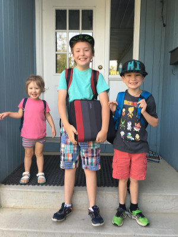
Hobbies
Overall nerd
What are we doing here?
(i.e. The Outline)
How it all began
My day to day
Super Exciting™ demo
Q&A
Lets go! But where to start...
First computer - Radio Shack - TRS-80
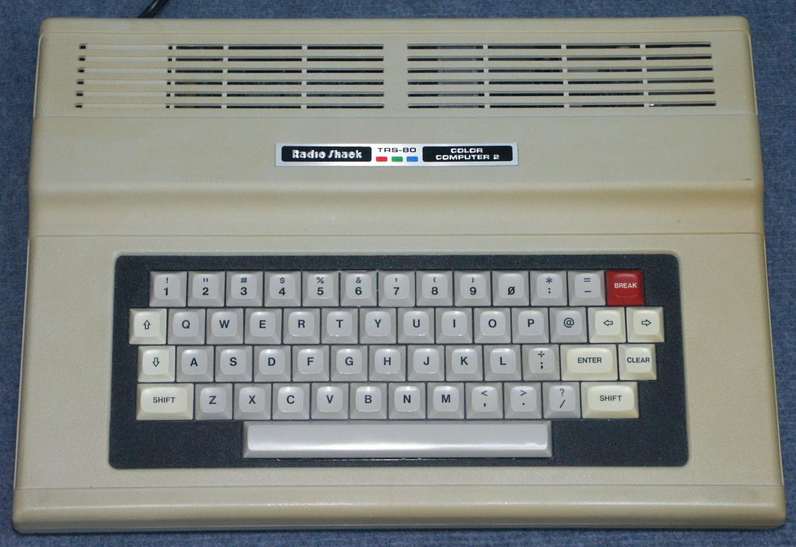
BASIC LANGUAGE
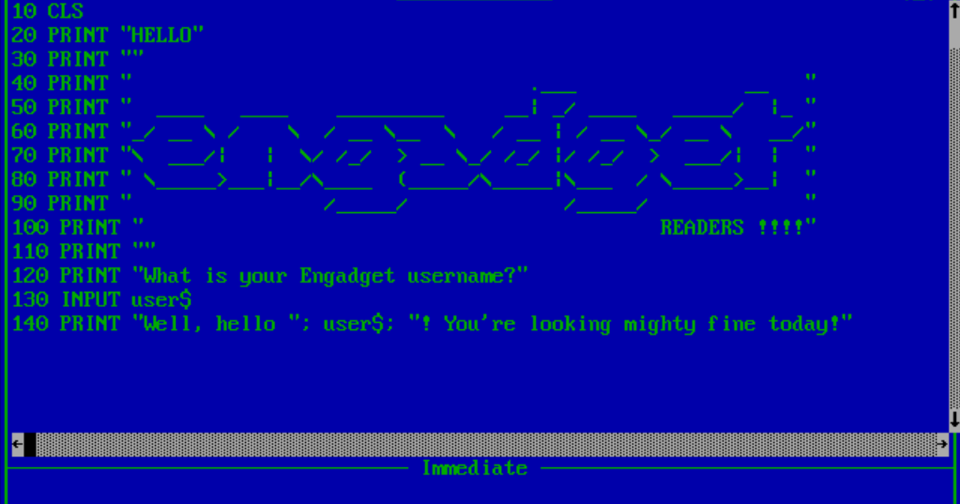
Computers at school
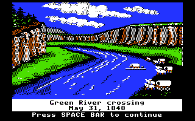
Upgrade
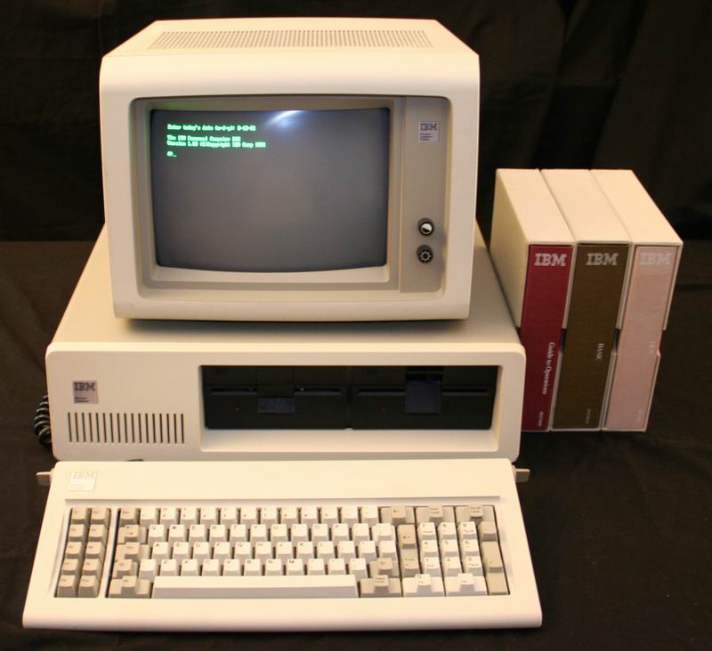
8088 IBM clone
10MB HDD - upgraded to 20MB
MSDOS 5.1
Monochrome display (Hercules Mono)
Back to the lab
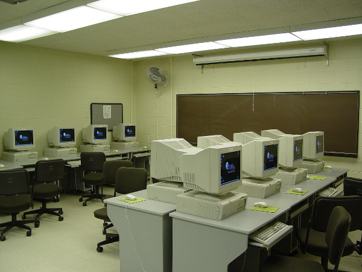
After High School

Now what
U of S Engineering
Some Time Off
Back home to work
Sasktel Help desk
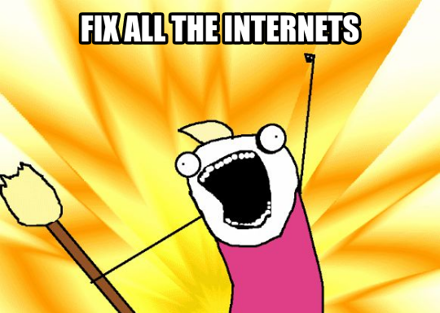
That was ok, But...
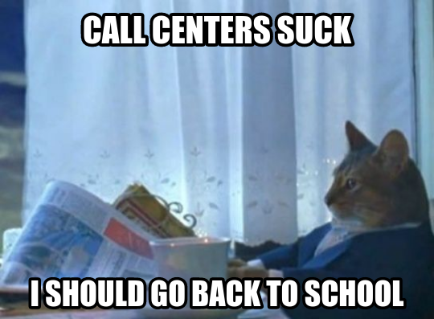
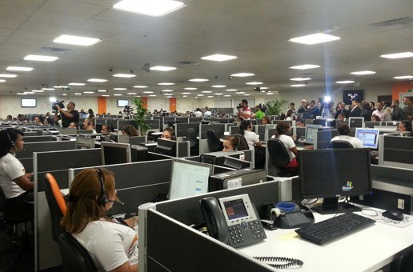
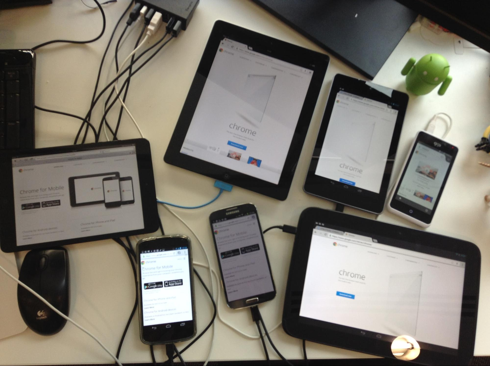

So what is Toolbox
So what do I do

Tools.Support
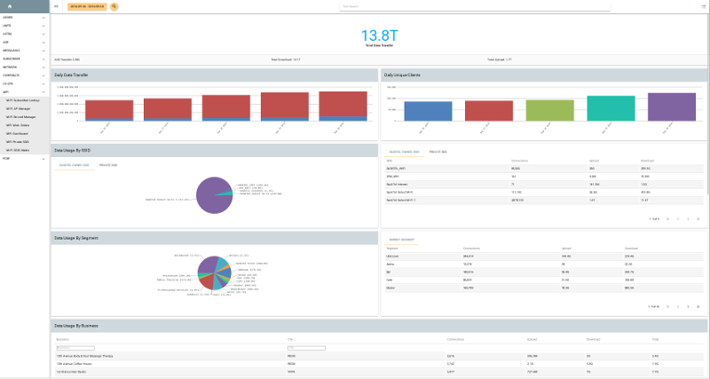
Day to day tasks
Maintain old versions
Migrate to new structure
Other databases
Server maintence
Open Source Landscape
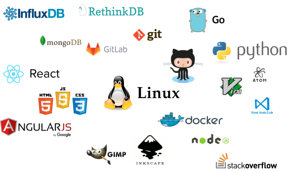